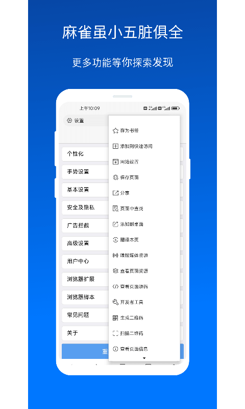
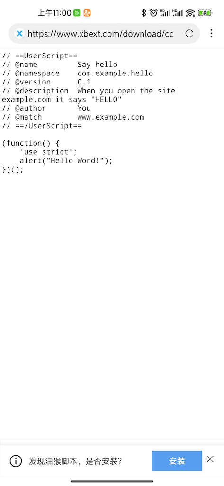

XBrowser 藏得真深：四个翻遍设置才挖到的冷门开关
大多数人用 XBrowser 只停在视频嗅探那一层，但长按加号开隐私标签、零依赖写 GM 脚本、底部地址栏单手操作——这些藏在设置里的开关，每个都能让用感爽一个档次。
你以为 XBrowser 就是个带视频嗅探的壳浏览器？去它的xbrowser官网瞅了一眼产品说明，再加上自己翻了一个礼拜设置项，挖到四个连官方都不怎么宣传的冷门开关——每一个都能让日常用起来爽好几个档次。
大家一般怎么用它
先说句公道话，XBrowser 最出名的就是那个视频嗅探——从官方下载拿过来点开播放页，自动弹工具条，一键下载或投屏。这个功能太显眼了，以至于很多人以为它也就这点东西。标签页管理、自定义脚本、桌面模式……这些都在菜单里躺着，但没人特意去翻。
我自己也是用了快两个月才发现，它的设置项藏得比想象中深得多。下面这四个，是我觉得最值的。
长按「+」直接开隐私标签
标签栏右边那个「+」号，所有人都知道点一下新建标签。但长按它，会直接弹一个隐私标签。不是普通标签，是那种关了自动清 Cookie、不写历史记录的隐私标签。
这个入口藏得之深，我在设置里翻了三圈才偶然按到。隐私标签本身没什么稀奇，Chrome、Firefox 都有。但在 XBrowser 里，你不用先进菜单再找「新建隐私标签」，大拇指直接长按标签栏的加号就行。临时查个东西、登个小号、或者只是想不留痕迹逛两页——这个手势快得离谱。
什么人用得上：需要频繁切换账号的、查敏感内容怕留痕的、或者单纯讨厌弹菜单的人。如果你从来不用隐私标签，这个可以无视。

不装 TamperMonkey 也能写 GM 脚本
这个是真的惊到我了。XBrowser 内置了用户脚本引擎，支持安装 Greasy Fork 上的脚本——这是很多壳浏览器都有的。但手写自定义脚本那块，它居然支持 TamperMonkey 风格的 GM_* 函数。
什么意思？就是你不用装任何扩展，直接在设置里新建脚本，用 // ==UserScript== 头部声明 GM_xmlhttpRequest、GM_setValue、GM_getValue，就能跨域请求、持久化存储——和 Greasy Fork 上的标准脚本格式一模一样。
藏在哪——当时专门去xbrowser文档确认过路径：设置 → 用户脚本 → 添加脚本 → 新建脚本。里面有个「执行时机」下拉框，可以选文档开始加载、DOM 就绪后、文档加载完成。大多数脚本用 DOM 就绪后就够，但如果你需要早改 DOM（比如把某个网站的标题换掉），就选文档开始加载。
// ==UserScript==
// @name 我的脚本
// @match *://*/*
// @grant GM_xmlhttpRequest
// @grant GM_setValue
// @grant GM_getValue
// ==/UserScript==
// 脚本内容写在这里上面这段就是最小可用的模板。匹配规则用 @match 最清晰，@match https://*.baidu.com/* 就是百度旗下所有页面，@match *://*/* 是全站。需要排除某些网站就加 @exclude。
这个功能适合谁：Greasy Fork 上找不到你要的功能、想对某个网站做一点点小改动、或者想学用户脚本怎么工作的人。不会写 JS 就跳过，没用。

视频嗅探还有手动触发和下载器联动
自动嗅探大家都用，但有时候自动不触发——某些网站做了反嗅探，或者视频地址是加密的。这时候别慌，点浏览器右上角的工具箱图标，里面有个「嗅探媒体资源」或者类似的选项，手动触发一次就行。
手动触发会重新扫描当前页面的所有网络请求，有时候自动漏的，手动能扫出来。
扫出来后如果是 M3U8 格式（就是切成很多小片段那种），XBrowser 会调起支持 M3U8 的第三方下载器——比如 1DM 或 ADM——下载器自动把分片合并成完整的 MP4。这个联动是自动的，不用你手动复制链接再粘过去。
还有投屏：视频工具栏上有投屏按钮，点一下扫描局域网里的 DLNA 设备，选电视或盒子就能投。手机可以关屏继续投，不占屏幕。
什么人用得上：经常下视频的、看直播想录下来的、或者想投电视的人。如果自动嗅探够用，这俩技巧用不上。
底部地址栏 + 桌面模式，大屏手机党必开
这俩是外观和浏览器设置里的，放一起说。
底部地址栏藏在设置 → 外观设置 → 地址栏位置，默认是顶部。改成底部之后，大屏手机单手操作舒服太多——大拇指不用抬到屏幕最顶端。我现在已经回不去了。
桌面模式在设置 → 浏览器设置 → 桌面模式。开启后浏览器会把自己伪装成桌面浏览器（发送桌面 UA），那些在手机上强制显示简化版页面的网站——比如 GitHub 的编辑器、某些后台管理界面——就会返回完整的桌面版。V5.5.0 还修过一次桌面模式不生效的问题，现在稳定了。
还有个搭配用的：强制页面缩放，在设置 → 浏览器设置 → 高级设置 → 强制页面缩放。有些网站禁用了双指捏合缩放，开这个开关之后不管网站怎么设，都能随便缩。
一个坑别踩
视频嗅探不是万能的。遇到用 WebSocket 推送视频、或者地址加密频繁更换的平台——比如某些大视频平台、直播平台——XBrowser 也无能为力。自动触发也好手动触发也好，都扫不到。别在这上面死磕，换专门的下载器或脚本更有效。
最后
XBrowser 的设置项藏得真深，很多好用的东西就躺在那里等你翻。上面这四个是我觉得最值的——长按加号、手写 GM 脚本、手动嗅探 + 下载器联动、底部地址栏 + 桌面模式。把它用透，能省不少来回切应用的麻烦。顺便说一句，我整理的这篇文章里的脚本模板和设置路径，分别同步到了GitHub、Gitee、GitCode三个仓库，国内访问走 Gitee 更顺畅。